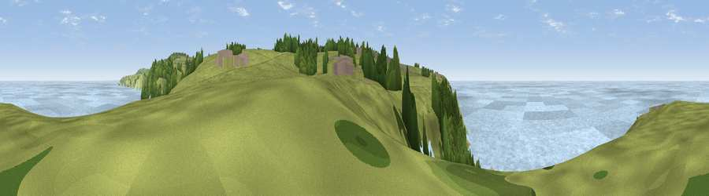

Viewpoint near Boscaswell
#6115 in England · top 24% of its area beats it · near BoscaswellWhere it is
The exact computed spot (SW 38012 35700). Click the marker for map links.
The view, rendered

A 360° render of this exact spot computed from the terrain model, tree cover and land cover — summer colours, afternoon light, calibrated against photographs of famous viewpoints. Real trees, hedges and buildings will differ in detail.
The panorama
Grey silhouette: terrain skyline in each direction (720 bearings, Earth curvature and refraction included). Dashed green: skyline with trees (+15 m) and buildings (+8 m) as obstacles. Blue strip: how far the ground is visible on each bearing.
Where the view opens
Wedge length = distance to the farthest visible ground on that bearing (vegetation-aware). Rings at 10, 25 and 50 km.
What fills the view
61% water · 24% grassland · 13% woodland · 1% bare ground
Angular shares of the visible panorama (visual magnitude), not map area. Landscape diversity 0.43 (0–1 Shannon).
Key numbers
More beautiful places nearby
The staircase of upgrades: each row has a higher view potential than everything closer. Driving times are estimates from straight-line distance, calibrated against real road routing — check an actual route before setting out.
| Place | Direction | Drive | Score |
|---|---|---|---|
| Viewpoint near Bojewyan | E · 1 km | ~3 min | 73.4 |
| Viewpoint near Pendeen | SSE · 2 km | ~5 min | 80.8 |
| Viewpoint near Morvah | E · 4 km | ~8 min | 83.2 |
| Viewpoint near Porthmeor | E · 4 km | ~9 min | 84.8 |
| Rosewall Hill | ENE · 11 km | ~21 min | 88.0 |
| Viewpoint near Combe Martin | NE · 165 km | ~187 min | 88.9 |
| Holdstone Hill | NE · 167 km | ~188 min | 90.2 |
| The Knoll | ENE · 221 km | ~237 min | 91.0 |
50.16331, -5.66975 · source: screening · position refined by local search. Computed location — check access rights before visiting.